SocialVR is defined as a VR-based social interaction technology, which allows multiple users who are physically separated to interaction with each other in a shared virtual space.
Cake_VR
A socialVR tool for the remote co-design of customized cakes
Master thesis, 2020.02-2020.08
Tutor: Huib de Ridder, Pablo Cesar, Jie Li Tool: Blender, Unity, Photon Skill: Qualitative research, VR development
Introduction
Cake_VR is a socialVR tool, allowing cake makers and clients to collaboratively design unique cakes remotely in a shared virtual space. It is the Master thesis of Design for Interaction, collaborating with CWI (Centrum Wiskunde & Informatica), national research institute for mathematics and computer science in the Netherlands.
Research Procedure
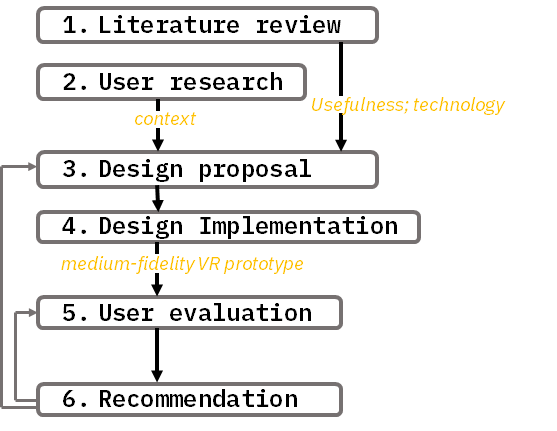
In the part 1 and 2, I did the literature review and user research to prove the usefulness of this project, as well as providing knowledge of technology and context to the design proposal, which will presented in part 3. After that, The design concept will be implemented, into a form of medium-fidelity VR prototype. The prototype will be evaluated by the user tests, to investigate the impacts of socialVR tool on co-design activities, as well as concluding recommendations for the study methods and design concept.
Research task
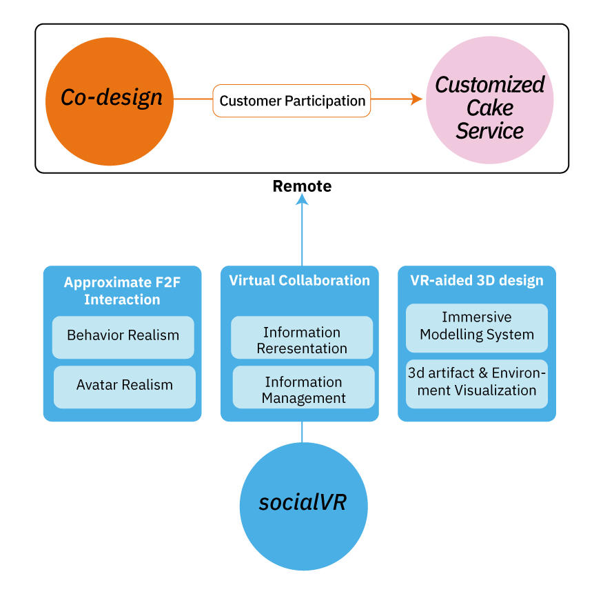
In this project, I want explore how to integrate co-design methodology to customization services to increase customer participation, and hence, user satisfaction. Then, I want to take the SocialVR as a medium to support remote co-design activities.
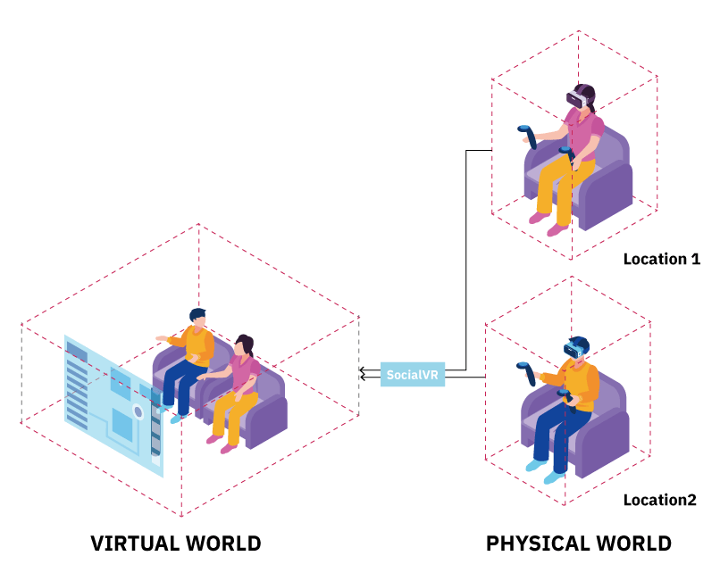
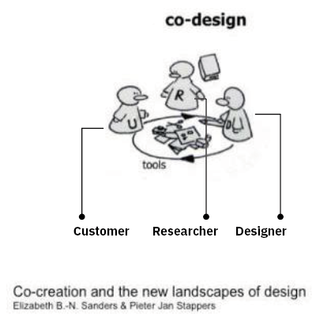
Co-design involves customers into the design process and decision-making of the product development, together with professional designers.
User research
In this research, I wanted to understand the current interaction of the customized cake services . Here, I want to explore two questions. In order to answer these questions, I interview 5 cake makers and 4 clients who have personalized cakes before.
- How do clients and cake makers generate ideas and make the design decisions?
- What's their concerns and latent needs?
[Result 1] workflow of baker-client communication

The workflow is generally divided into three stages.
First, the idea is originated from client inputs. In this phase, client express their ideas to cake maker, based on the emotion they would convey via this cake, or the context in which the cake would be consumed, or, the desired physical features of the cake. When describing their ideas, clients usually utilize a collection reference images to illustrate the abstract thoughts.
Second, the cake idea is developed based on the collaborative ideation and negotiation. Cake makers and clients adapt some reference design templates, combine existing design elements, or create something from scratch. They exchange ideas and professional advices, in aid of diverse media, such as dummy, photos and sketch or even real cakes. These media were efficient in presenting tacit information, such as size, 3d shape, aesthetic, which are difficult to express in words.
Third, the client and cake maker reach an agreement on the final decision by making a conclusion. They usually transform all the design details into texts and images, and then documents them into a digital or physical contract, as an evidence of their consensus.
[Result 2] Concern & Latent needs
- There is a lack of integration of multiple media in the design process.
- Participants lack immediate and direct perception of the effects of their design intervention.
- A time-efficient method is needed for cake makers to embody the finalized cake ideas.
- There is a need for presenting the finalized ideas including both vivid details and an overall image.
- Cake makers need a more efficient way to manage the decision information so as to conclude design decisions.
Design proposal
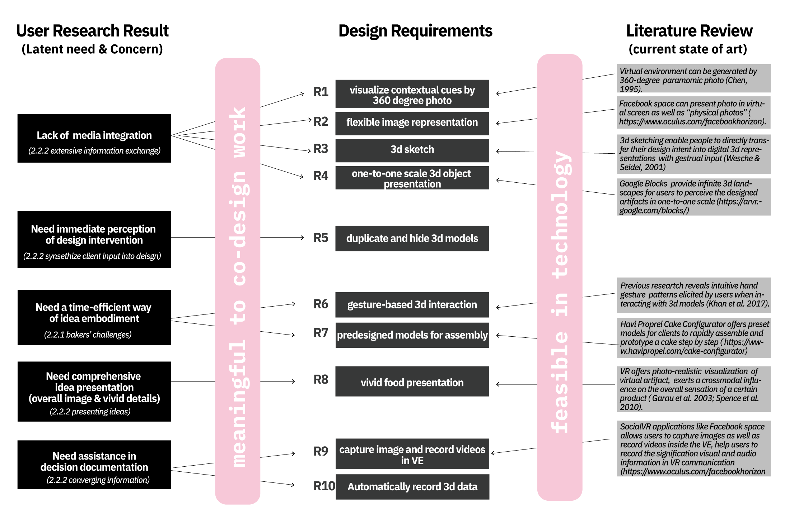
The design proposal included 10 design requirements of the socialVR tool. Firstly, we proposed the interaction techniques based on the user research results, in order to make sure that design requirements fit users’ needs and support co-design work. Secondly, we go through the literature review to investigate the current state of art with regard to socialVR and VR modeling., to make sure the design requirements are feasible in technology. Finally, the ten design requirements are concluded.
VR development
1. 3d modelling and UV shading in Blender, to create the 3d shapes and visual texture of the mostly user cake component models.
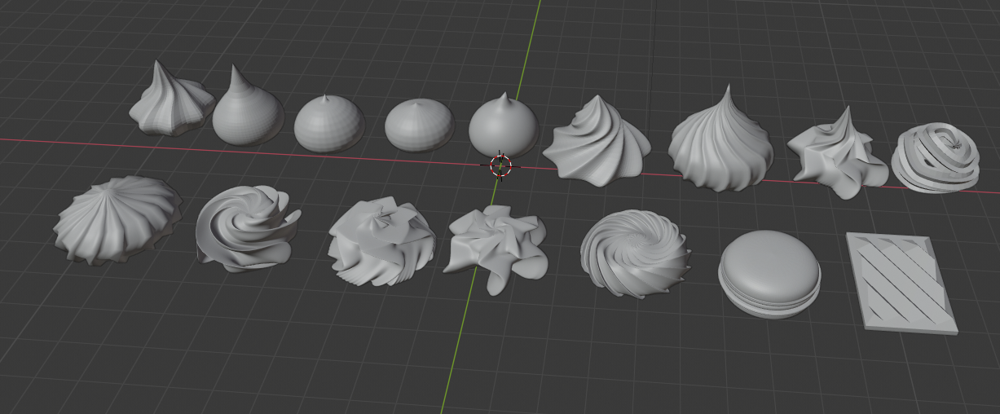
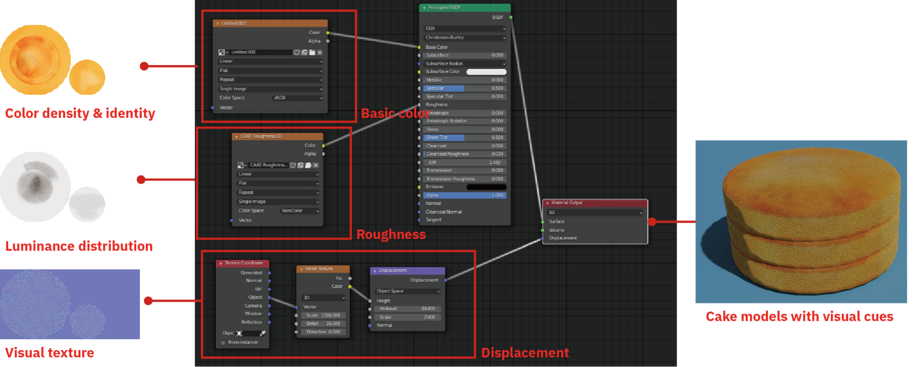
2. 3d manipulatin, UI interaction and the upper body motion of avatar is developed with C# in Unity, together with Oculus integration.
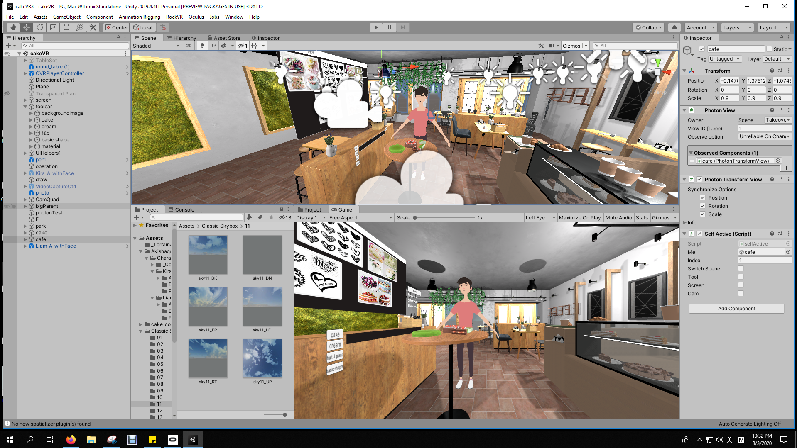
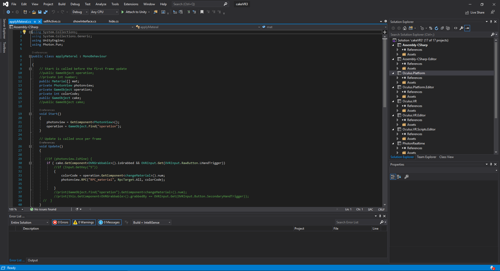
3. PhotonPUN is used to connect the multiple users via the server, and syncronize the 3d data, motion and function calls between the users.
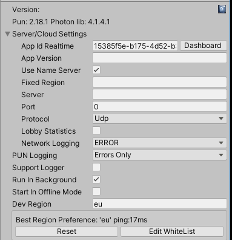
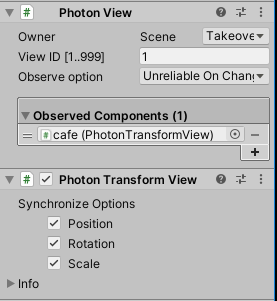
User Evaluation
In this user evaluation, I wanted to explore two research questions.
- How does this socialVR tool affect users’ collaborative and social behavior in co-designing customized cakes, compared with face-to-face communication?
- Do the design requirements fix users’ latent needs in the cake co-design activities?
Test Setup
Two users were involved in each VR test, including one participant and one researcher. The participant play the role of clients in the virtual world, while the researcher play the role of cake maker. They need to collaboratively design a cake in the virtual world. The cake is designed for a specific context including when , where and for whom. These contexts are generated by the participants themselves, in aid of generative research.
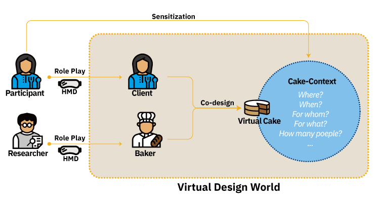
The procedure of the test is divided into 3 phases. Firstly, a skype interview is performed one day before the VR test, for inspiring the participants to generate a context for which the cake would be made. The outcome of the interview is a collection of reference images and key words which would present the cake idea. These reference images will be loaded into the VR application for the VR test in the second phase, so as to create a personalized virtual co-design experience. After that, a post-test interview will be performed, in order to investigate participants’ experience and opinion in this socialVR tool.
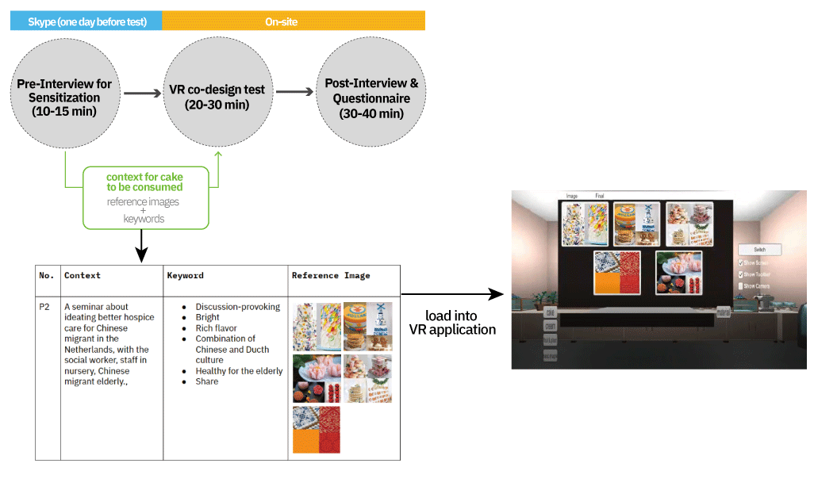
The VR tests were performed in the researcher’s studio. In order to simulate remote communication, a physical separation was set between the two users. They communicate via skype wearing a noise-cancelling earphone.

Result 1 - investigate social behavior
ANALYSIS STRUCTURE
In order to answer this question, I made 3 analysis. First, I did an observation study by watching the screen-captured video of the participant’s view in VR, in order to investigate their social behavior in the virtual world. Then I try to figure out what factors make them have different choices. Hence, we made a user profile, specifying the personal features of each user. Then, I made the a thematic analysis to explore the user experience of them.
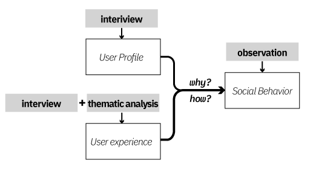
BEHAVIOR - collaboration mode
Based on the observation study, I found that there are two collaboration modes among the six tests. In the first mode, the customers built up the virtual cake by themselves while cake-makers sometimes give advice and assistance in modelling. The client is the primary actor who interacts with the cake models. I name it “client-oriented mode.” In the second mode, the customer usually conveyed ideas to bakers by talking, and then the cake maker built up the cake based on the clients’ thoughts. During this process, the client gives some comments. The models were mainly bult up by the cake maker. This mode was defined as ”baker-oriented mode.” Among the six tests, we found that p2 and p5 chose the first mode, while the other four participants chose the second one.
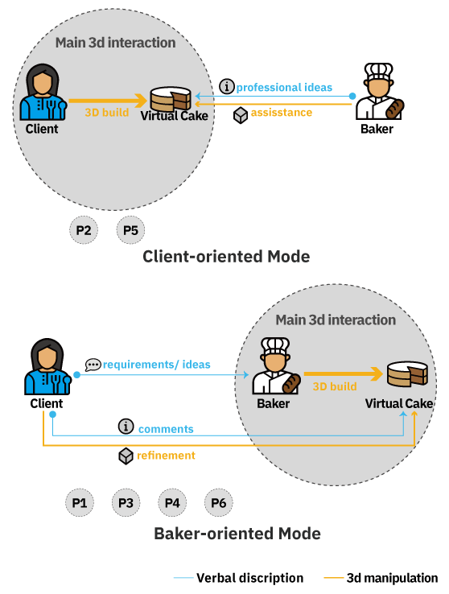
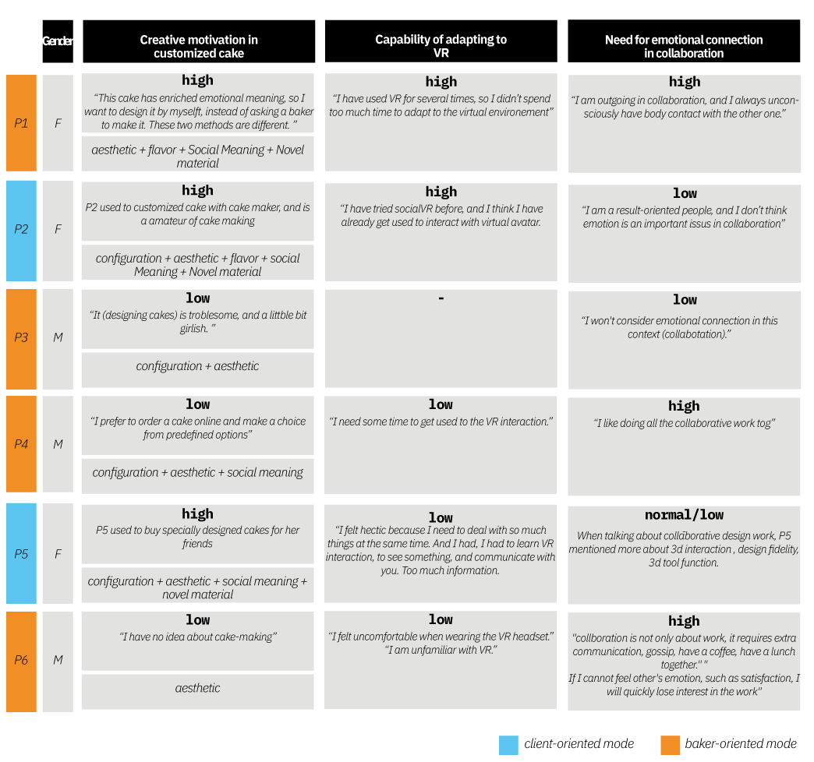
USER PROFILE - 3 features
From pre-test interview, observation in VR test and post-test interview, we found that each participant was different from three perspectives: creative motivation in customized cakes, capability of adapting to VR, and need for emotional connection in collaboration. We assume that these three factors might have some impacts on user’s social behaviour in virtual cake co-design. Thus, we specify each participant based on these three factors.
USER EXPERIENCE - similarity & difference with F2F
A thematic analysis was performed to figure out user experience. I categorize all the relevant quotations, to investigate their virtual social experience with regard to quality of interaction, social meaning as well as presence and immersiveness, In addition, I explore their experience in 3d modelling work. In each issue, I find there are some differences and similarities with the face to face interaction.
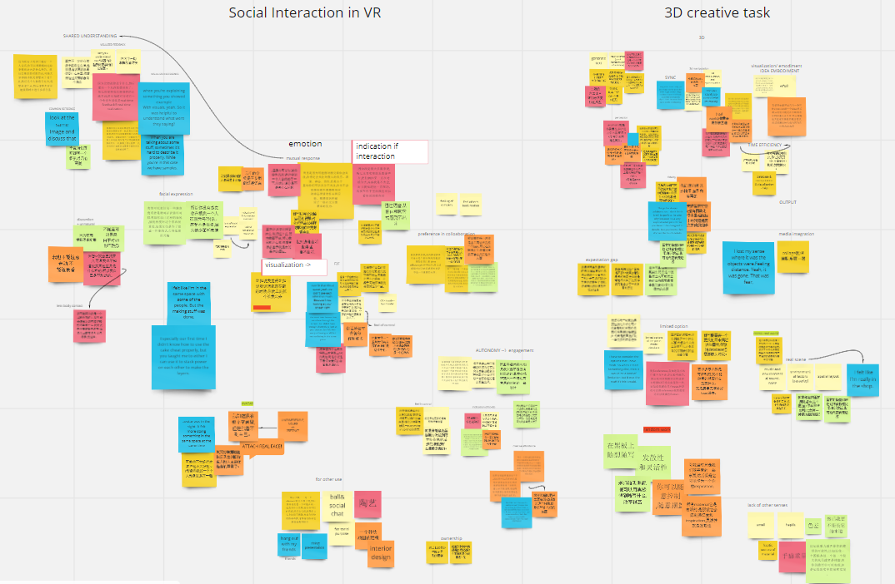
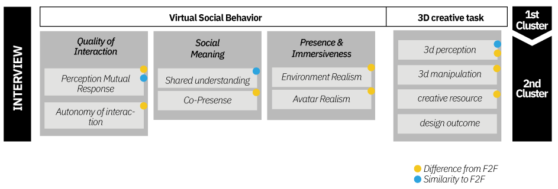
FINAL RESULT
I found that the creative motivation in cake, affective interaction in collaboration, and the perception of call-to-action from collaborators, are the most essential factors of people’s behavior and engagement in socialVR co-design
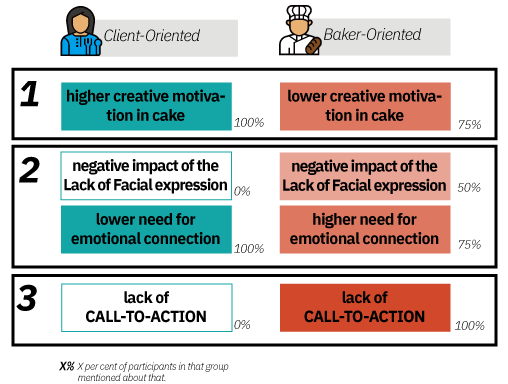
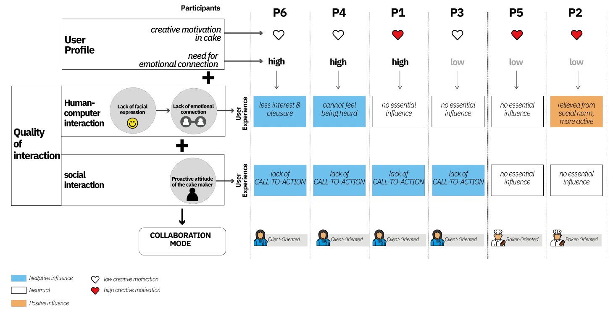
1. Creative motivation in cake highly influence the participant’s engagement in the work. I also found that this issue is highly relevant to gender difference, that is, the female have higher creative motivation in cake that the male.
2. Secondly, the lack of facial expression and emotional perception leads to different user experience on participants who have different needs for emotional connection in collaboration,. For people who have higher requirements, they were negatively influenced, and hence, less engaged. For people who have lower needs, there are little impact, or positive user experience.
3. All the people who were less engaged claimed that the were negatively influenced by the social interaction with the cake maker, to be more specific, they didn’t felt invited to join the co-design work due to the excessively proactive attitude of the baker. I found that that 75% of these participants are more demanding in emotional connection in work, however, I didn’t find out any evidence to show to reasoning line between these two elements.
Result 2 - validate design requirements
We validate each requirements by asking two questions, with regard to the user experience and utility of the design requirements. The result shows that 80% of the design requirement are helpful to the co-design work, and four of them are realized in a good quality.
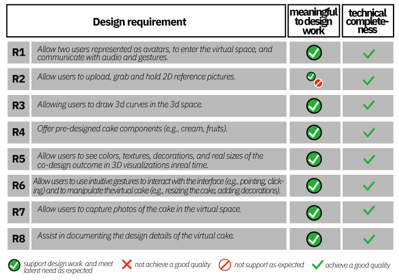
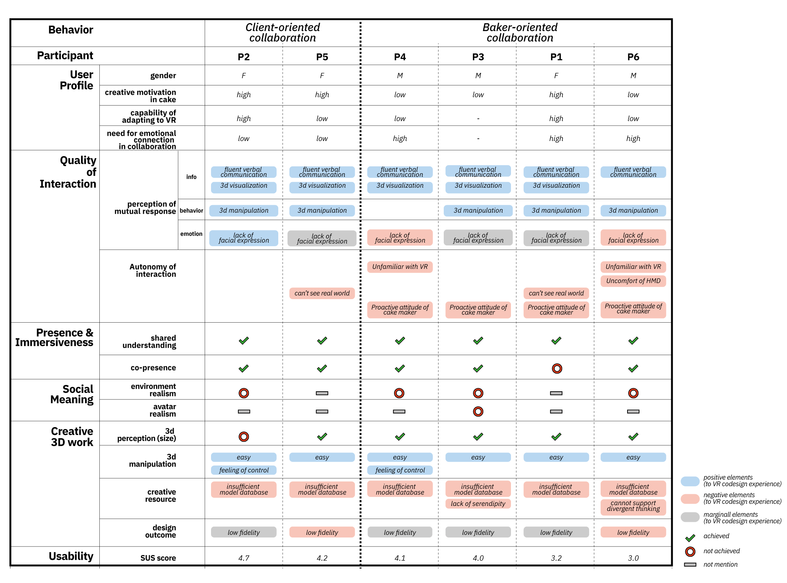
I also investigated the system usability. Participants evaluated the usability of this tool by filling in the SUS form, they were encouraged to think aloud while filling in the questionnaires.
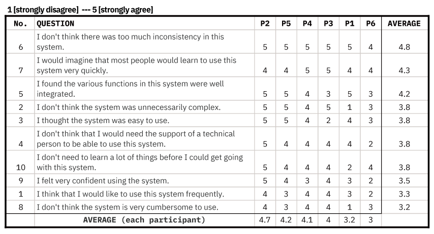
Recommendation for study methods
1. More Samples. The test sample should be larger, recruiting participants with diverse backgrounds and personal features. In addition, we hope to invite participants who truly need to personalize cakes in the real world. From user tests, we discovered that it was difficult to fully contextualize participants because they didn’t really need to order a customized cake.
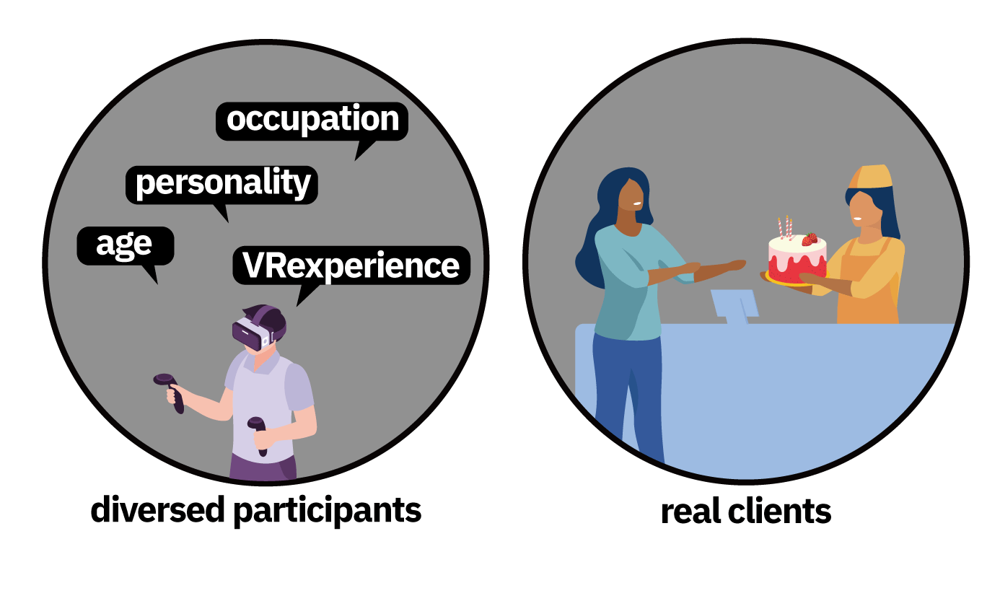
2. Involve professional cake makers. In this VR co-design test, the role of cake maker was played by the researcher who had little experience in cake making and business negotiation. There was a gap between real bakers and researchers with regards to professional knowledge and negotiation skills. In addition, since the opinions of professional cake makers on the socialVR tool were lost, we failed to investigate how this tool affects design experts’ behavior in the co-design activities and whether this tool meets their needs.
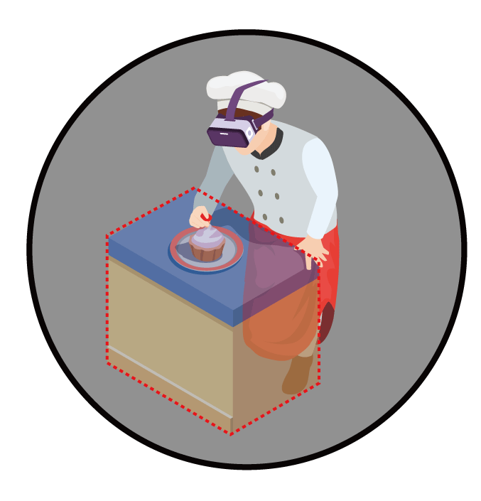
3. Different assignments. In general, all the contexts generated by participants are emotional and personal (i.e., birthday party), and this might have an impact on their experience and behavior in the design process. We assume that such a design process might be different from designing a cake for a result-oriented context (i.e., customize a cake for an anniversary of X company with a budget of 100 euro). Therefore, it is advisable to perform a comparative test and situate the participants in a result-oriented context.
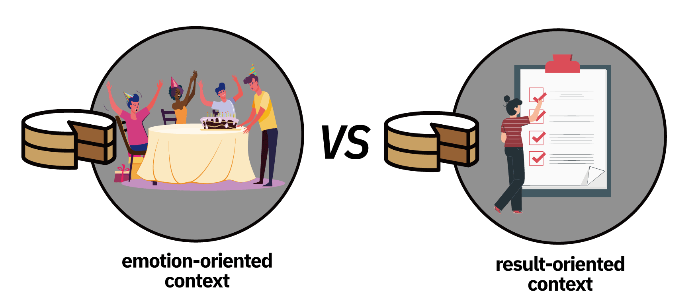
Recommendation for prototype
1. Design for dialogue. Face-to-face communication.
2. Design for realism. Higher rendering quality to improve environment realism.
3. Design for inspiring environment. A more creative environemnt encouraging people to play with 3d models.